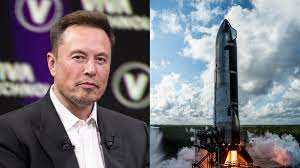

About Elon Musk
Elon Musk is a visionary entrepreneur, engineer, and inventor. Born on June 28, 1971, in Pretoria, South Africa, he showed an early interest in technology and business.
Early Life & Education
From a young age, Musk was fascinated by computers and taught himself programming. At just 12 years old, he created and sold his first video game, "Blastar." He later moved to Canada to attend Queen’s University and then transferred to the University of Pennsylvania, where he earned degrees in physics and economics.
Entrepreneurial Journey
- Zip2 (1996): A software company that provided business directories and maps for newspapers, sold for $307 million.
- X.com & PayPal (1999): A revolutionary online payment system, later sold to eBay for $1.5 billion.
- SpaceX (2002): Aiming to reduce the cost of space travel and make Mars colonization possible.
- Tesla (2004): Revolutionizing the automobile industry with electric vehicles and renewable energy.
- Neuralink (2016): Developing brain-computer interfaces to merge AI with the human brain.
- The Boring Company (2016): Creating underground transportation systems to ease city congestion.
Vision & Legacy
Musk’s vision extends beyond Earth, with plans for Mars colonization through SpaceX’s Starship project. He continues to push the limits of technology, from AI and robotics to sustainable energy.